import pandas as pd
from plotnine import *Aesthetic specifications
This document is a translation of the ggplot2 aesthetic specification.
Color and fill
Almost every geom has either color, fill, or both. Colors and fills can be specified in the following ways:
A name, e.g.,
"red". These can be any color name or value supported by matplotlib. See the matplotlib css colors documentation and the plot below for a list of colors.An rgb specification, with a string of the form
"#RRGGBB"where each of the pairsRR,GG,BBconsists of two hexadecimal digits giving a value in the range00toFFYou can optionally make the color transparent by using the form
"#RRGGBBAA".A missing value (e.g. None, np.nan, pd.NA), for a completely transparent colour.
Here’s an example of listing CSS color names matplotlib supports:
from matplotlib import colors as mcolors
n_colors = len(mcolors.CSS4_COLORS)
colors = pd.DataFrame(
{
"name": [name for name in mcolors.CSS4_COLORS.keys()],
"x": [(x // 30) * 1.5 for x in range(n_colors)],
"y": [-(x % 30) for x in range(n_colors)],
}
)
(
ggplot(colors, aes("x", "y"))
+ geom_point(aes(color="name"), size=5)
+ geom_text(aes(label="name"), nudge_x=0.14, size=7.5, ha="left")
+ scale_color_identity(guide=None)
+ expand_limits(x=7)
+ theme_void()
+ labs(title="CSS4 colors")
)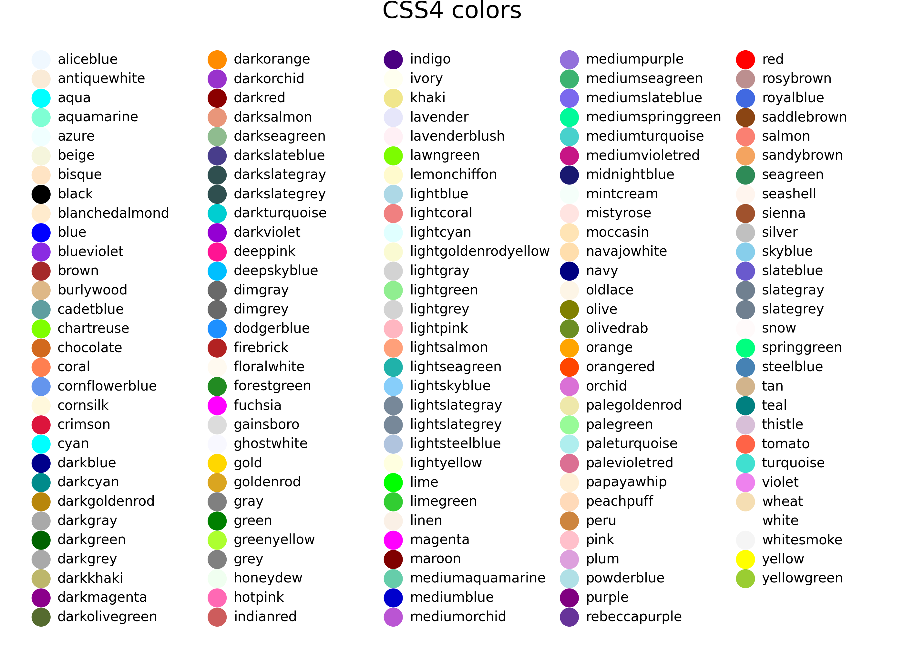
Lines
As well as colour, the appearance of a line is affected by linewidth, linetype, linejoin and lineend.
Line type
Line types can be specified with:
A name: solid, dashed, dotted, dashdot, as shown below:
lty = [ "solid", "dashed", "dotted", "dashdot", ] linetypes = pd.DataFrame({ "y": list(range(len(lty))), "lty": lty }) (ggplot(linetypes, aes(0, "y")) + geom_segment(aes(xend = 5, yend = "y", linetype = "lty")) + scale_linetype_identity(guide=None) + geom_text(aes(label = "lty"), nudge_y = 0.2, ha="left") + scale_x_continuous(name=None, breaks = None) + scale_y_reverse(name=None, breaks = None) )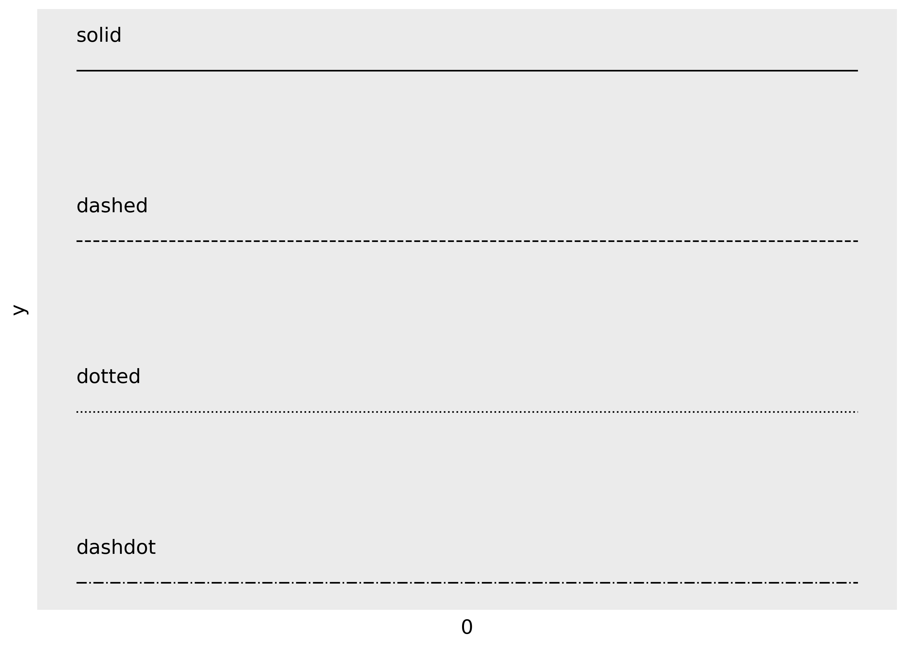
The lengths of on/off stretches of line. This is done with a tuple of the form
(offset, (on, off, ...)).lty = [ (0, (1, 1)), (0, (1, 8)), (0, (1, 15)), (0, (8, 1)), (0, (8, 8)), (0, (8, 15)), (0, (15, 1)), (0, (15, 8)), (0, (15, 15)), (0, (2, 2, 6, 2)), ] linetypes = pd.DataFrame({"y": list(range(len(lty))), "lty": lty}) ( ggplot(linetypes, aes(0, "y")) + geom_segment(aes(xend=5, yend="y", linetype="lty")) + scale_linetype_identity(guide=None) + geom_text(aes(label="lty"), nudge_y=0.2, ha="left") + scale_x_continuous(name=None, breaks=None) + scale_y_reverse(name=None, breaks=None) )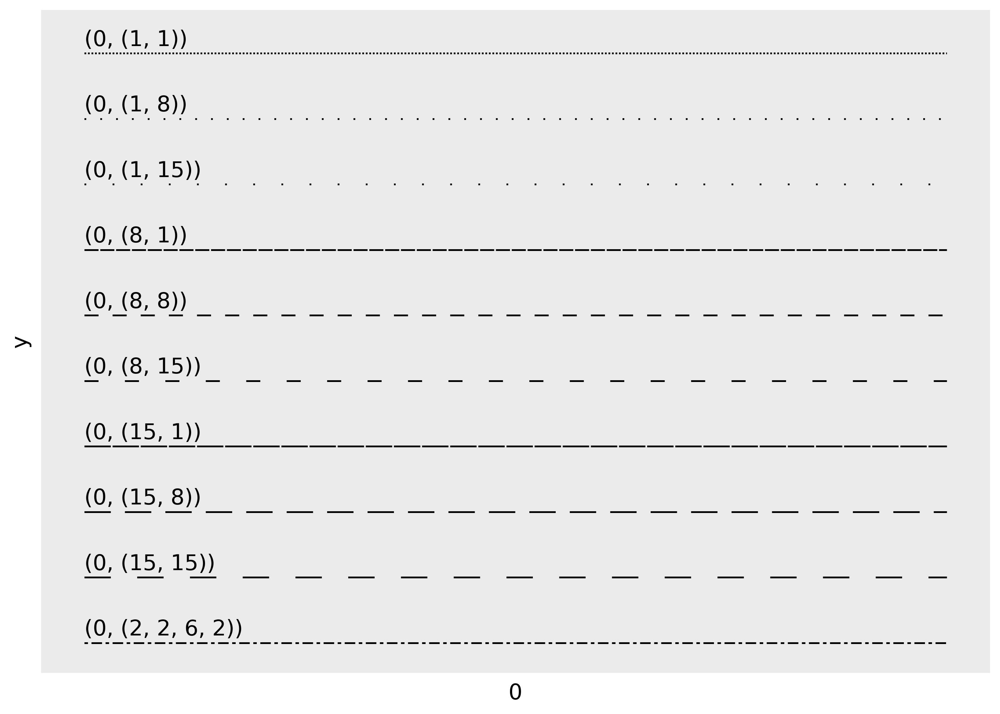
The three standard dash-dot line types described above correspond to:
- dashed:
(0, (4, 4)) - dotted:
(0, (1, 3) - dashdot:
(0, (1, 3, 4, 3))
Linewidth
Due to a historical error, the unit of linewidth is roughly 0.75 mm. Making it exactly 1 mm would change a very large number of existing plots, so we’re stuck with this mistake.
Line end/join parameters
The appearance of the line end is controlled by the
lineendparamter, and can be one of “round”, “butt” (the default), or “square”.df = pd.DataFrame({"x": [1,2,3], "y": [4, 1, 9]}) base = ggplot(df, aes("x", "y")) + xlim(0.5, 3.5) + ylim(0, 10) ( base + geom_path(size = 10) + geom_path(size = 1, colour = "red") ) ( base + geom_path(size = 10, lineend = "round") + geom_path(size = 1, colour = "red") ) ( base + geom_path(size = 10, lineend = "square") + geom_path(size = 1, colour = "red") )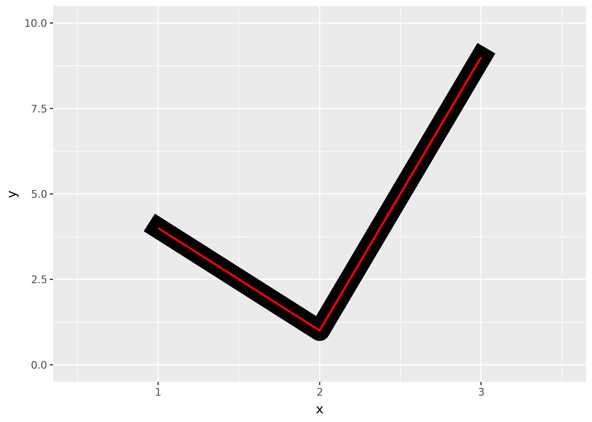
The appearance of line joins is controlled by
linejoinand can be one of “round” (the default), “mitre”, or “bevel”.df = pd.DataFrame({"x": [1,2,3], "y": [9, 1, 9]}) base = ggplot(df, aes("x", "y")) + ylim(0, 10) ( base + geom_path(size = 10) + geom_path(size = 1, colour = "red") ) ( base + geom_path(size = 10, linejoin = "mitre") + geom_path(size = 1, colour = "red") ) ( base + geom_path(size = 10, linejoin = "bevel") + geom_path(size = 1, colour = "red") )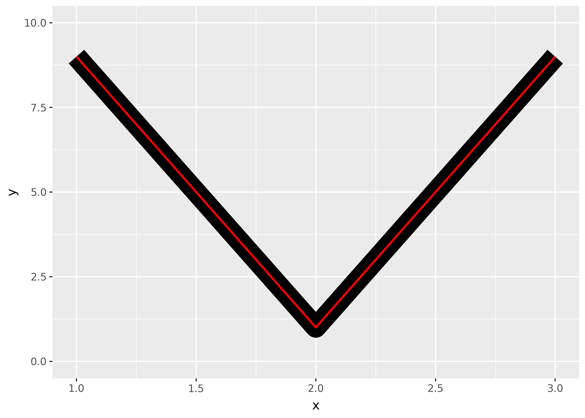

Mitre joins are automatically converted to bevel joins whenever the angle is too small (which would create a very long bevel). This is controlled by the linemitre parameter which specifies the maximum ratio between the line width and the length of the mitre.
Polygons
The border of the polygon is controlled by the colour, linetype, and linewidth aesthetics as described above. The inside is controlled by fill.
Point
Shape
Shapes take five types of values:
- A string for a point type, as specified in matplotlib.markers:
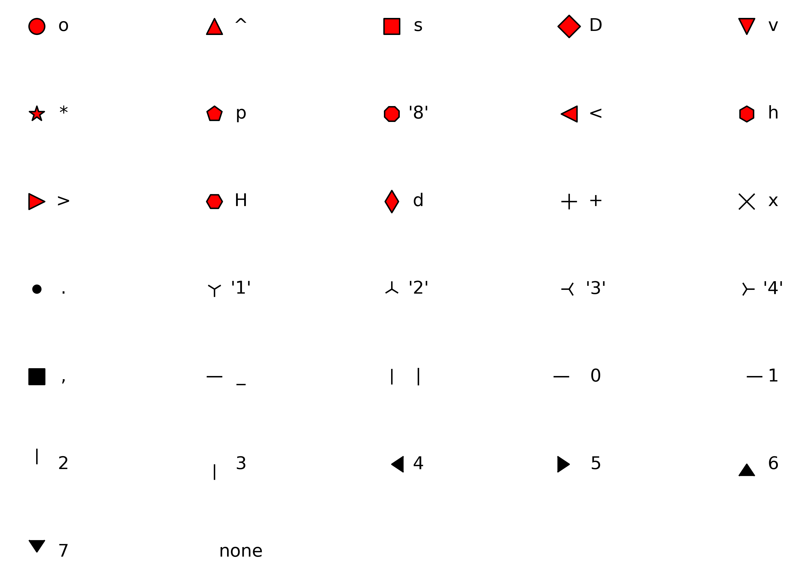
Noneto draw nothing.
Color and fill
While color applies to all shapes, fill only applies to shapes with red fill in the plot above. The size of the filled part is controlled by size, the size of the stroke is controlled by stroke. Each is measured in mm, and the total size of the point is the sum of the two. Note that the size is constant along the diagonal in the following figure.
sizes = (
pd.DataFrame({"size": [0, 2, 4, 6]})
.merge(
pd.DataFrame({"stroke": [0, 2, 4, 6]}), how="cross"
)
)
(
ggplot(sizes, aes("size", "stroke", size = "size", stroke = "stroke")) +
geom_abline(slope = -1, intercept = 6, colour = "white", size = 6) +
geom_point(shape = "o", fill = "red") +
scale_size_identity(guide=None)
)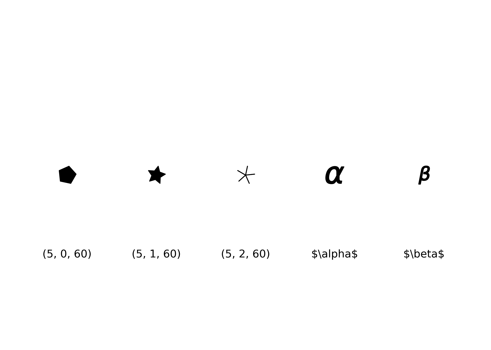
Text
Font family
There are only three fonts that are guaranteed to work everywhere: “sans” (the default), “serif”, or “mono”:
df = pd.DataFrame(
{"x": 1, "y": [3, 2, 1], "family": ["sans-serif", "serif", "monospace"]}
)
(ggplot(df, aes("x", "y")) + geom_text(aes(label="family", family="family"), size=20))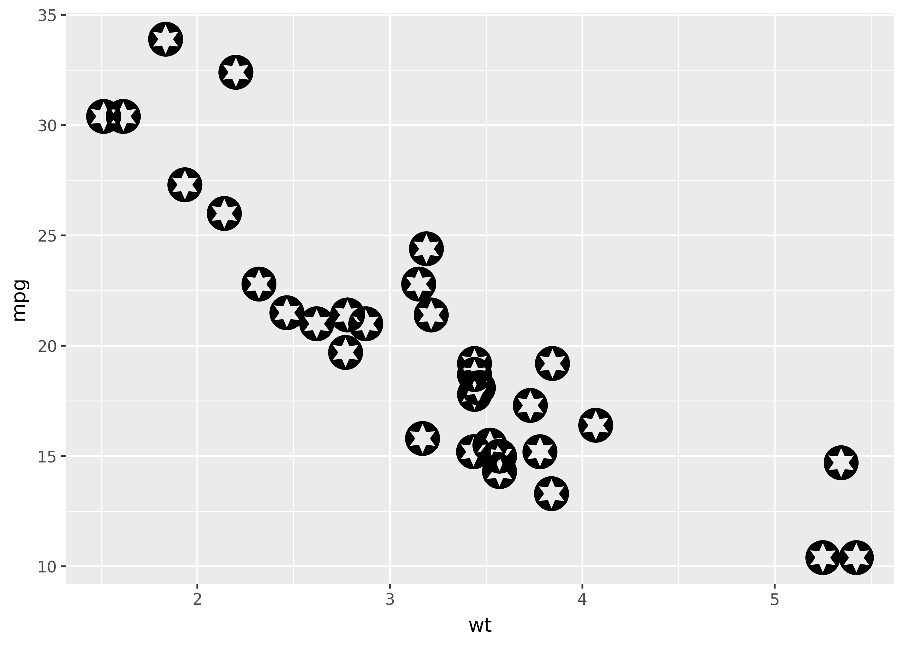
Font weight
Currently, font weight doesn’t seem to work in plotnine (see this issue). But once it does, code like this should work:
df = pd.DataFrame(
{"x": [1, 2, 3, 4], "fontweight": ["light", "normal", "bold", "heavy"]}
)
(ggplot(df, aes(1, "x")) + geom_text(aes(label="fontweight"), fontweight="bold"))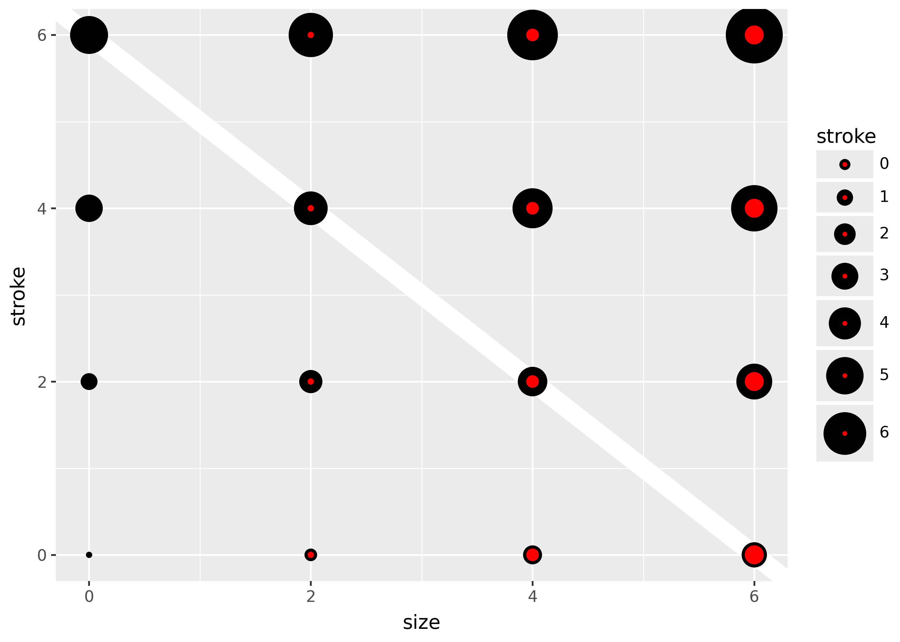
Font style
Currently font style doesn’t seem to work in plotnine (see this issue). But once it does, code like this should work:
df = pd.DataFrame({"x": [1, 2, 3], "fontstyle": ["normal", "italic", "oblique"]})
(ggplot(df, aes(1, "x")) + geom_text(aes(label="fontstyle", fontstyle="fontstyle")))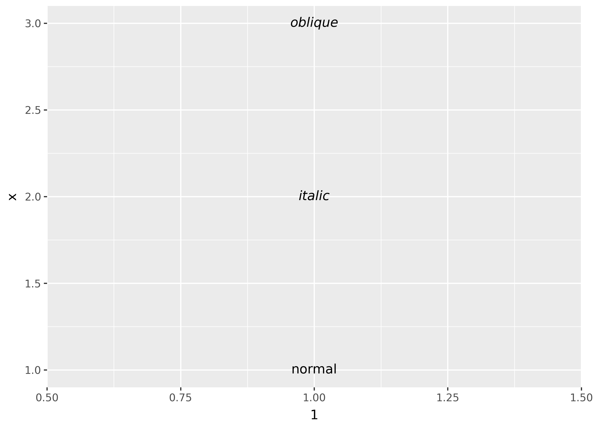
Font size
The size of text is measured in mm by default. This is unusual, but makes the size of text consistent with the size of lines and points. Typically you specify font size using points (or pt for short), where 1 pt = 0.35mm. In geom_text() and geom_label(), you can set size.unit = "pt" to use points instead of millimeters. In addition, ggplot2 provides a conversion factor as the variable .pt, so if you want to draw 12pt text, you can also set size = 12 / .pt.
Justification
Horizontal and vertical justification have the same parameterisation, either a string (“top”, “middle”, “bottom”, “left”, “center”, “right”) or a number between 0 and 1:
- top = 1, middle = 0.5, bottom = 0
- left = 0, center = 0.5, right = 1
just = pd.DataFrame({"hjust": ["center", "right", "left"], "x": [0, 1, 2]}).merge(pd.DataFrame({"vjust": ["center", "top", "bottom"], "y": [0, 1, 2]}), how="cross")
just["label"] = just["hjust"].astype(str).str.cat(just["vjust"].astype(str), sep=", ")
(
ggplot(just, aes("x", "y")) +
geom_point(colour = "grey", size = 5) +
geom_text(aes(label = "label", hjust = "hjust", vjust = "vjust"))
+ expand_limits(x = [-.5, 2.5], y = [-.5, 2.5])
)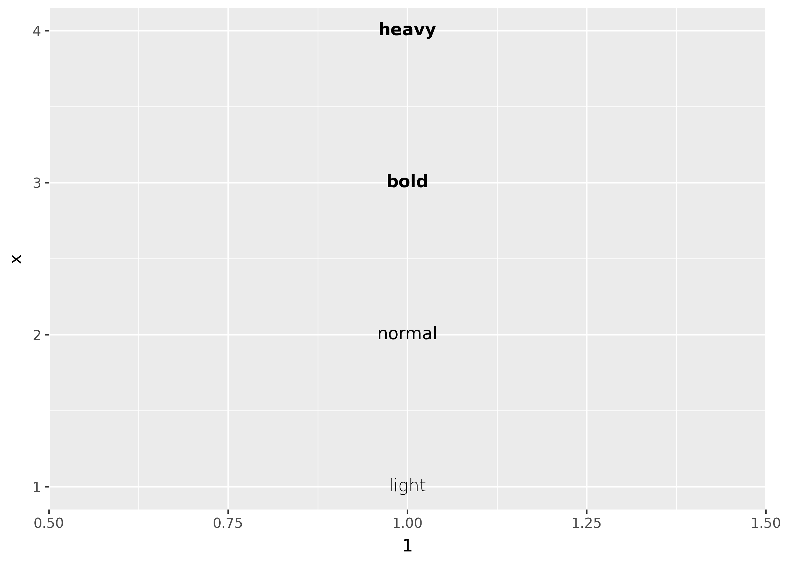
Note that you can use numbers outside the range (0, 1), but it’s not recommended.